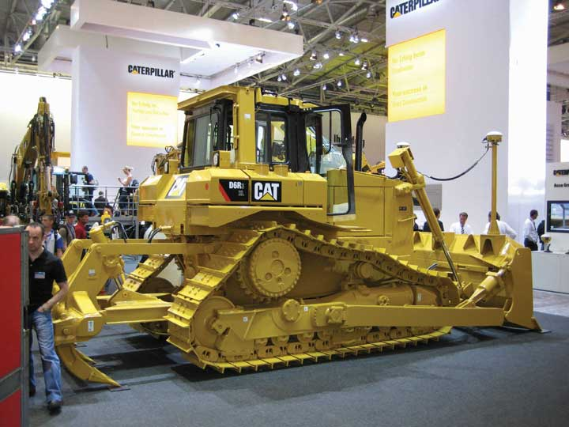
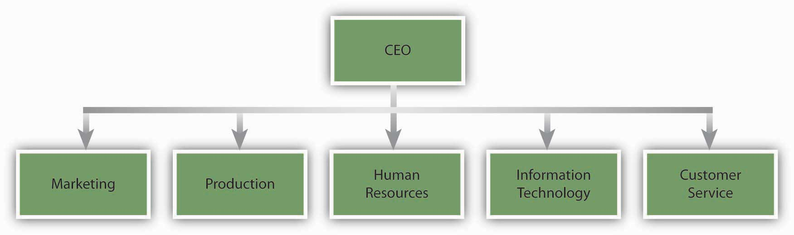
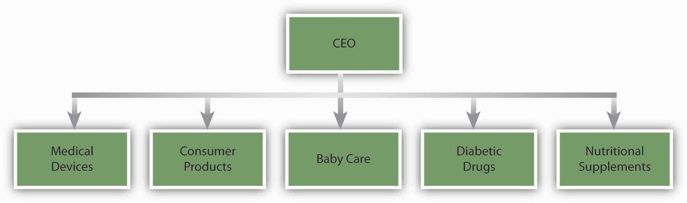

Organizational structureHow individual and team work within an organization are coordinated. refers to how individual and team work within an organization are coordinated. To achieve organizational goals and objectives, individual work needs to be coordinated and managed. Structure is a valuable tool in achieving coordination, as it specifies reporting relationships (who reports to whom), delineates formal communication channels, and describes how separate actions of individuals are linked together. Organizations can function within a number of different structures, each possessing distinct advantages and disadvantages. Although any structure that is not properly managed will be plagued with issues, some organizational models are better equipped for particular environments and tasks.
What exactly do we mean by organizational structure? Which elements of a company’s structure make a difference in how we behave and how work is coordinated? We will review four aspects of structure that have been frequently studied in the literature: centralization, formalization, hierarchical levels, and departmentalization. We view these four elements as the building blocks, or elements, making up a company’s structure. Then we will examine how these building blocks come together to form two different configurations of structures.
CentralizationThe degree to which decision-making authority is concentrated at higher levels in an organization. is the degree to which decision-making authority is concentrated at higher levels in an organization. In centralized companies, many important decisions are made at higher levels of the hierarchy, whereas in decentralized companies, decisions are made and problems are solved at lower levels by employees who are closer to the problem in question.
As an employee, where would you feel more comfortable and productive? If your answer is “decentralized,” you are not alone. Decentralized companies give more authority to lower-level employees, resulting in a sense of empowerment. Decisions can be made more quickly, and employees often believe that decentralized companies provide greater levels of procedural fairness to employees. Job candidates are more likely to be attracted to decentralized organizations. Because centralized organizations assign decision-making responsibility to higher-level managers, they place greater demands on the judgment capabilities of CEOs and other high-level managers.
Many companies find that the centralization of operations leads to inefficiencies in decision making. For example, in the 1980s, the industrial equipment manufacturer Caterpillar suffered the consequences of centralized decision making. At the time, all pricing decisions were made in the corporate headquarters in Peoria, Illinois. This meant that when a sales representative working in Africa wanted to give a discount on a product, they needed to check with headquarters. Headquarters did not always have accurate or timely information about the subsidiary markets to make an effective decision. As a result, Caterpillar was at a disadvantage against competitors such as the Japanese firm Komatsu. Seeking to overcome this centralization paralysis, Caterpillar underwent several dramatic rounds of reorganization in the 1990s and 2000s.Nelson, G. L., & Pasternack, B. A. (2005). Results: Keep what’s good, fix what’s wrong, and unlock great performance. New York: Crown Business.
Figure 7.4
Changing their decision-making approach to a more decentralized style has helped Caterpillar compete at the global level.
However, centralization also has its advantages. Some employees are more comfortable in an organization where their manager confidently gives instructions and makes decisions. Centralization may also lead to more efficient operations, particularly if the company is operating in a stable environment.Ambrose, M. L., & Cropanzano, R. S. (2000). The effect of organizational structure on perceptions of procedural fairness. Journal of Applied Psychology, 85, 294–304; Miller, D., Droge, C., & Toulouse, J. (1988). Strategic process and content as mediators between organizational context and structure. Academy of Management Journal, 31, 544–569; Oldham, G. R., & Hackman, R. J. (1981). Relationships between organizational structure and employee reactions: Comparing alternative frameworks. Administrative Science Quarterly, 26, 66–83; Pierce, J. L., & Delbecq, A. L. (1977). Organization structure, individual attitudes, and innovation. Academy of Management Review, 2, 27–37; Schminke, M., Ambrose, M. L., & Cropanzano, R. S. (2000). The effect of organizational structure on perceptions of procedural fairness. Journal of Applied Psychology, 85, 294–304; Turban, D. B., & Keon, T. L. (1993). Organizational attractiveness: An interactionist perspective. Journal of Applied Psychology, 78, 184–193; Wally, S., & Baum, J. R. (1994). Personal and structural determinants of the pace of strategic decision making. Academy of Management Journal, 37, 932–956.
In fact, organizations can suffer from extreme decentralization. For example, some analysts believe that the Federal Bureau of Investigation (FBI) experiences some problems because all its structure and systems are based on the assumption that crime needs to be investigated after it happens. Over time, this assumption led to a situation where, instead of following an overarching strategy, each FBI unit is completely decentralized and field agents determine how investigations should be pursued. It has been argued that due to the change in the nature of crimes, the FBI needs to gather accurate intelligence before a crime is committed; this requires more centralized decision making and strategy development.Brazil, J. J. (2007, April). Mission: Impossible? Fast Company, 114, 92–109.
Hitting the right balance between decentralization and centralization is a challenge for many organizations. At the Home Depot, the retail giant with over 2,000 stores across the United States, Canada, Mexico, and China, one of the major changes instituted by former CEO Bob Nardelli was to centralize most of its operations. Before Nardelli’s arrival in 2000, Home Depot store managers made a number of decisions autonomously and each store had an entrepreneurial culture. Nardelli’s changes initially saved the company a lot of money. For example, for a company of that size, centralizing purchasing operations led to big cost savings because the company could negotiate important discounts from suppliers. At the same time, many analysts think that the centralization went too far, leading to the loss of the service-oriented culture at the stores. Nardelli was ousted after seven years.Charan, R. (2006, April). Home Depot’s blueprint for culture change. Harvard Business Review, 84(4), 60–70; Marquez, J. (2007, January 15). Big bucks at door for Depot HR leader. Workforce Management, 86(1).
FormalizationThe extent to which policies, procedures, job descriptions, and rules are written and explicitly articulated. is the extent to which an organization’s policies, procedures, job descriptions, and rules are written and explicitly articulated. Formalized structures are those in which there are many written rules and regulations. These structures control employee behavior using written rules, so that employees have little autonomy to decide on a case-by-case basis. An advantage of formalization is that it makes employee behavior more predictable. Whenever a problem at work arises, employees know to turn to a handbook or a procedure guideline. Therefore, employees respond to problems in a similar way across the organization; this leads to consistency of behavior.
While formalization reduces ambiguity and provides direction to employees, it is not without disadvantages. A high degree of formalization may actually lead to reduced innovativeness because employees are used to behaving in a certain manner. In fact, strategic decision making in such organizations often occurs only when there is a crisis. A formalized structure is associated with reduced motivation and job satisfaction as well as a slower pace of decision making.Fredrickson, J. W. (1986). The strategic decision process and organizational structure. Academy of Management Review, 11, 280–297; Oldham, G. R., & Hackman, R. J. (1981). Relationships between organizational structure and employee reactions: Comparing alternative frameworks. Administrative Science Quarterly, 26, 66–83; Pierce, J. L., & Delbecq, A. L. (1977). Organization structure, individual attitudes, and innovation. Academy of Management Review, 2, 27–37; Wally, S., & Baum, R. J. (1994). Strategic decision speed and firm performance. Strategic Management Journal, 24, 1107–1129. The service industry is particularly susceptible to problems associated with high levels of formalization. Sometimes employees who are listening to a customer’s problems may need to take action, but the answer may not be specified in any procedural guidelines or rulebook. For example, while a handful of airlines such as Southwest do a good job of empowering their employees to handle complaints, in many airlines, lower-level employees have limited power to resolve a customer problem and are constrained by stringent rules that outline a limited number of acceptable responses.
Another important element of a company’s structure is the number of levels it has in its hierarchy. Keeping the size of the organization constant, tall structuresOrganizations with several layers of management between frontline employees and the top level. have several layers of management between frontline employees and the top level, while flat structuresOrganizations with few layers, often with large numbers of employees reporting to a single manager. consist of only a few layers. In tall structures, the number of employees reporting to each manager tends to be smaller, resulting in greater opportunities for managers to supervise and monitor employee activities. In contrast, flat structures involve a larger number of employees reporting to each manager. In such a structure, managers will be relatively unable to provide close supervision, leading to greater levels of freedom of action for each employee.
Research indicates that flat organizations provide greater need satisfaction for employees and greater levels of self-actualization.Ghiselli, E. E., & Johnson, D. A. (1970). Need satisfaction, managerial success, and organizational structure. Personnel Psychology, 23, 569–576; Porter, L. W., & Siegel, J. (2006). Relationships of tall and flat organization structures to the satisfactions of foreign managers. Personnel Psychology, 18, 379–392. At the same time, there may be some challenges associated with flat structures. Research shows that when managers supervise a large number of employees, which is more likely to happen in flat structures, employees experience greater levels of role ambiguity—the confusion that results from being unsure of what is expected of a worker on the job.Chonko, L. B. (1982). The relationship of span of control to sales representatives’ experienced role conflict and role ambiguity. Academy of Management Journal, 25, 452–456. This is especially a disadvantage for employees who need closer guidance from their managers. Moreover, in a flat structure, advancement opportunities will be more limited because there are fewer management layers. Finally, while employees report that flat structures are better at satisfying their higher-order needs such as self-actualization, they also report that tall structures are better at satisfying security needs of employees.Porter, L. W., & Lawler, E. E. (1964). The effects of tall versus flat organization structures on managerial job satisfaction. Personnel Psychology, 17, 135–148. Because tall structures are typical of large and well-established companies, it is possible that when working in such organizations employees feel a greater sense of job security.
Figure 7.5
Companies such as IKEA, the Swedish furniture manufacturer and retailer, are successfully using flat structures within stores to build an employee attitude of job involvement and ownership.
Organizational structures differ in terms of departmentalization, which is broadly categorized as either functional or divisional.
Organizations using functional structuresStructures in which jobs are grouped based on similarity in functions. group jobs based on similarity in functions. Such structures may have departments such as marketing, manufacturing, finance, accounting, human resources, and information technology. In these structures, each person serves a specialized role and handles large volumes of transactions. For example, in a functional structure, an employee in the marketing department may serve as an event planner, planning promotional events for all the products of the company.
In organizations using divisional structuresWhen departments represent the unique products, services, customers, or geographic locations the company is serving., departments represent the unique products, services, customers, or geographic locations the company is serving. Thus each unique product or service the company is producing will have its own department. Within each department, functions such as marketing, manufacturing, and other roles are replicated. In these structures, employees act like generalists as opposed to specialists. Instead of performing specialized tasks, employees will be in charge of performing many different tasks in the service of the product. For example, a marketing employee in a company with a divisional structure may be in charge of planning promotions, coordinating relations with advertising agencies, and planning and conducting marketing research, all for the particular product line handled by his or her division.
In reality, many organizations are structured according to a mixture of functional and divisional forms. For example, if the company has multiple product lines, departmentalizing by product may increase innovativeness and reduce response times. Each of these departments may have dedicated marketing, manufacturing, and customer service employees serving the specific product; yet, the company may also find that centralizing some operations and retaining the functional structure makes sense and is more cost effective for roles such as human resources management and information technology. The same organization may also create geographic departments if it is serving different countries.
Each type of departmentalization has its advantages. Functional structures tend to be effective when an organization does not have a large number of products and services requiring special attention. When a company has a diverse product line, each product will have unique demands, deeming divisional (or product-specific) structures more useful for promptly addressing customer demands and anticipating market changes. Functional structures are more effective in stable environments that are slower to change. In contrast, organizations using product divisions are more agile and can perform better in turbulent environments. The type of employee who will succeed under each structure is also different. Research shows that when employees work in product divisions in turbulent environments, because activities are diverse and complex, their performance depends on their general mental abilities.Hollenbeck, J. R., Moon, H., Ellis, A. P. J., West, B. J., Ilgen, D. R., et al. (2002). Structural contingency theory and individual differences: Examination of external and internal person-team fit. Journal of Applied Psychology, 87, 599–606.
Figure 7.6 An Example of a Pharmaceutical Company with a Functional Departmentalization Structure
Figure 7.7 An Example of a Pharmaceutical Company with a Divisional Departmentalization Structure
The different elements making up organizational structures in the form of formalization, centralization, number of levels in the hierarchy, and departmentalization often coexist. As a result, we can talk about two configurations of organizational structures, depending on how these elements are arranged.
Mechanistic structuresThose structures that resemble a bureaucracy and are highly formalized and centralized. are those that resemble a bureaucracy. These structures are highly formalized and centralized. Communication tends to follow formal channels and employees are given specific job descriptions delineating their roles and responsibilities. Mechanistic organizations are often rigid and resist change, making them unsuitable for innovativeness and taking quick action. These forms have the downside of inhibiting entrepreneurial action and discouraging the use of individual initiative on the part of employees. Not only do mechanistic structures have disadvantages for innovativeness, but they also limit individual autonomy and self-determination, which will likely lead to lower levels of intrinsic motivation on the job.Burns, T., & Stalker, M. G. (1961). The Management of innovation. London: Tavistock; Covin, J. G., & Slevin, D. P. (1988). The influence of organizational structure. Journal of Management Studies. 25, 217–234; Schollhammer, H. (1982). Internal corporate entrepreneurship. Englewood Cliffs, NJ: Prentice-Hall; Sherman, J. D., & Smith, H. L. (1984). The influence of organizational structure on intrinsic versus extrinsic motivation. Academy of Management Journal, 27, 877–885; Slevin, D. P., & Covin, J. G. (1990). Juggling entrepreneurial style and organizational structure—how to get your act together. Sloan Management Review, 31(2), 43–53.
Despite these downsides, however, mechanistic structures have advantages when the environment is more stable. The main advantage of a mechanistic structure is its efficiency. Therefore, in organizations that are trying to maximize efficiency and minimize costs, mechanistic structures provide advantages. For example, McDonald’s has a famously bureaucratic structure where employee jobs are highly formalized, with clear lines of communication and specific job descriptions. This structure is an advantage for them because it allows McDonald’s to produce a uniform product around the world at minimum cost. Mechanistic structures can also be advantageous when a company is new. New businesses often suffer from a lack of structure, role ambiguity, and uncertainty. The presence of a mechanistic structure has been shown to be related to firm performance in new ventures.Sine, W. D., Mitsuhashi, H., & Kirsch, D. A. (2006). Revisiting Burns and Stalker: Formal structure and new venture performance in emerging economic sectors. Academy of Management Journal, 49, 121–132.
In contrast to mechanistic structures, organic structuresThose structures that are flexible and decentralized with low levels of formalization where communication lines are more fluid and flexible. are flexible and decentralized, with low levels of formalization. In Organizations with an organic structure, communication lines are more fluid and flexible. Employee job descriptions are broader and employees are asked to perform duties based on the specific needs of the organization at the time as well as their own expertise levels. Organic structures tend to be related to higher levels of job satisfaction on the part of employees. These structures are conducive to entrepreneurial behavior and innovativeness.Burns, T., & Stalker, M. G. (1961). The Management of Innovation. London: Tavistock; Covin, J. G., & Slevin, D. P. (1988) The influence of organizational structure. Journal of Management Studies, 25, 217–234. An example of a company that has an organic structure is the diversified technology company 3M. The company is strongly committed to decentralization. At 3M, there are close to 100 profit centers, with each division feeling like a small company. Each division manager acts autonomously and is accountable for his or her actions. As operations within each division get too big and a product created by a division becomes profitable, the operation is spun off to create a separate business unit. This is done to protect the agility of the company and the small-company atmosphere.Adair, J. (2007). Leadership for innovation: How to organize team creativity and harvest ideas. London: Kogan Page.
The degree to which a company is centralized and formalized, the number of levels in the company hierarchy, and the type of departmentalization the company uses are key elements of a company’s structure. These elements of structure affect the degree to which the company is effective and innovative as well as employee attitudes and behaviors at work. These elements come together to create mechanistic and organic structures. Mechanistic structures are rigid and bureaucratic and help companies achieve efficiency, while organic structures are decentralized, flexible, and aid companies in achieving innovativeness.


{kind=link}
{kind=link}